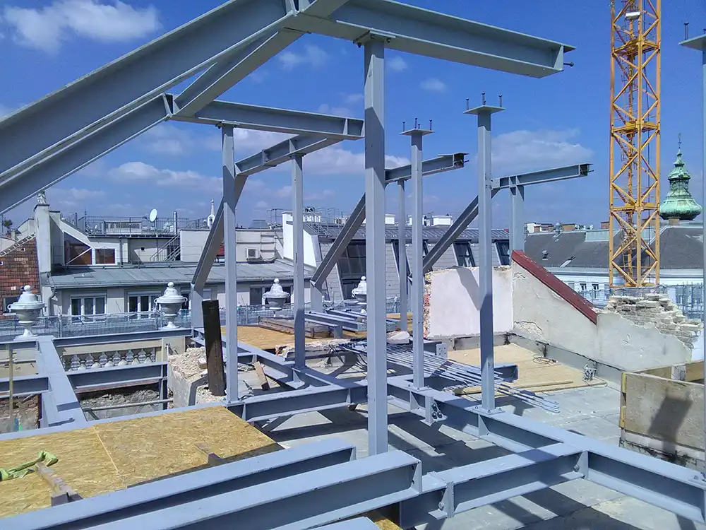

Baumanagement für das Dachtragwerk
Beim Bau des Dachtragwerks übernahmen wir das Baumanagement. In dieser Rolle bringen wir Statik, Planung und ausführende Firmen zusammen, damit technische Fragen vor der Montage geklärt werden können.
Mehr über Baumanagement